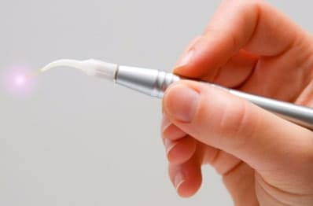
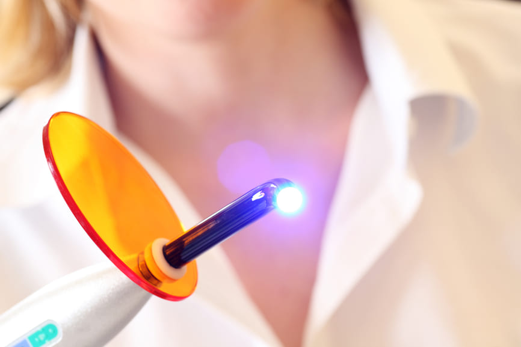

Лазерна стоматологія

Лазерна стоматологія у Києві з'явилася нещодавно. Стоматологічна клініка IMPERIAL може називатися клінікою лазерної стоматології. У нашій стоматології Вам буде запропоновано наступні послуги лазерної стоматології:
• лазерне відбілювання зубів;
• лікування пародонтозу лазером;
• лікування кореневих каналів лазером;
• безпечне лазерне відбілювання зубів;
• хірургічне лікування стоматологічних захворювань на лазер.
Лазерна стоматологія – це одне з найважливіших відкриттів ХХ століття. Лазер дозволяє виконувати хірургічні втручання з мінімальним дискомфортом для пацієнта. Усі маніпуляції безкровні, безболісні та характеризуються високою ефективністю
Особливості лазерного лікування
У клініці "Імперіал" лікування проводиться лазером Picasso Pro. Сучасний апарат має потужні антибактеріальні та протизапальні властивості, за рахунок чого виводить стоматологію на принципово новий рівень. Промінь торкається лише уражених тканин, не пошкоджуючи здорові, дозволяючи знизити травматичність маніпуляцій. Тканина зуба при обробці не нагрівається, а болючі відчуття – мінімальні, тому найчастіше при роботі з лазером знеболювання не потрібно зовсім або використовуються місцеві анестетики. Можна виділити такі переваги лазера Picasso Pro:
• у процесі обробки лазером знищується 99.9% бактерій;
• Виключається ймовірність інфікування, оскільки лазерний промінь стерильний;
• Звук та вібрація при роботі апарату відсутня, що дозволяє уникнути додаткового стресу у пацієнта;
• Будь-які операції із застосуванням лазера – безкровні, оскільки промінь миттєво запаює розсічені тканини.
Області застосування
Поява на ринку лазера Picasso Pro дозволила покращити результати лікування зубів та ясен. Використовують апарат для проведення різних маніпуляцій, його багатофункціональність та ефективність встигли оцінити і фахівці, і пацієнти нашої клініки. Успішне застосування лазера можливе в таких галузях стоматології:
1. Хірургічна стоматологія. Стоматолог-хірург, працюючи з лазером, отримує добрий огляд операційного поля за рахунок відсутності кровотечі. Це помітно прискорює процес втручання. Дезінфекція тканин виключає ризик зараження та знижує період післяопераційної реабілітації. Як правило, тканини регенерують у 2 рази швидше, ніж при традиційному втручанні. Після проведення всіх маніпуляцій не потрібно накладати шви, що виключає появу набряків та больових відчуттів.
2.Ендодонтії. При обробці кореневих каналів, яка потрібна на лікування пульпітів і періодонтитів, лазер використовується досить часто. Він стерилізує канали, що значно знижує або запобігає ризику виникнення повторних запалень верхівки кореня зуба (апекса). Завдяки бакетрицидним властивостям лазера, можна на 100% видалити патогенну мікрофлору із важкодоступних областей, це дозволяє якісно лікувати гарнулеми, кісти та кістогранульоми без застосування антибіотиків.
3.Пародонтологія. Лазер використовується для проведення фотодинамічної терапії (ФДТ), яка дає змогу усувати патології пародонту. Стан пацієнтів з пародонтитом у тяжкій формі покращується на 95% лише після 3-4 разів обробки променем.
4.Естетична стоматологія. За допомогою лазера можна швидко та безболісно створити гарний контур ясен. Також за допомогою апарату проводиться відбілювання, аналогів якому досі не існує. Процедура займає зовсім небагато часу, не викликає підвищення чутливості зубів, дає пролонгований ефект.